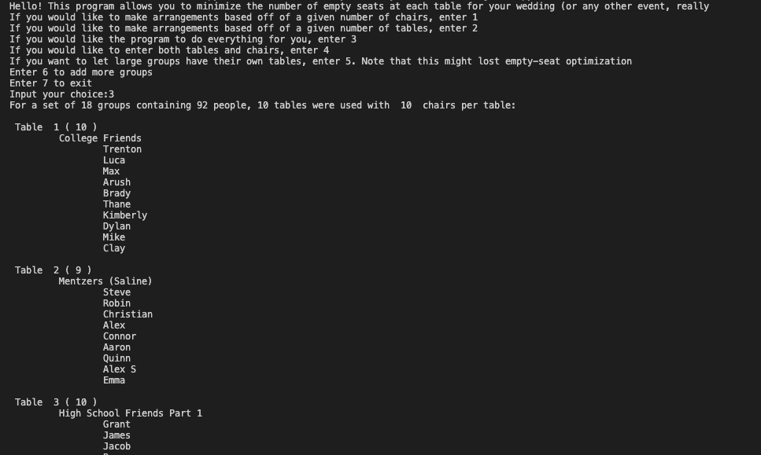

Efficient Event Seating

At my cousin’s wedding reception this past July, I was looking around at all of the tables trying to figure out if there was any rhyme or reason to the seating arrangements.
Some tables were completely full (or even overfilled),
while others had plenty of vacant seats.
When she came around to my family’s table, I asked my cousin how she had arranged all of us.
She said that she and my new cousin-in-law had done the seating by hand, and that it was a
massive pain to take into account the different groups of people as well as the number of chairs/tables available to them.
Wanting to brush up on my Python skills, I decided that I’d make a tool for creating seating arrangements with
groups manually inputted by the user. The user could also sort people in different ways, such as:
a) optimizing for a given number of chairs at each table
b) finding how many people should be seated with a given number of tables
c) having the program determine how many chairs/tables are needed based on the average group size
d) letting each larger-than-average group get its own table, even though this increases the amount of empty seats
Each of these options would print out what groups were at each table and who was in each group. Additionally, the program was designed so
that the number of open seats at each table was minimized and so that as few groups as
possible needed special accommodation (for each user preference).
Having furthered my education since creating this project, I am currently working
on implementing disjoint sets to make sure that only people who know each other
(e.g. bride’s family/groom’s family) are seated together.